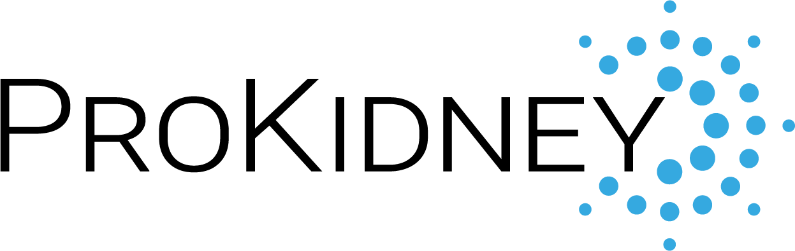

Quality Assurance for Clinical Trials Software
Clinical trial SaaS QA and long-running platform support.
Outcome: live project with multitenant and dedicated servers.
Read case study
with ElinextProposal brief
ProKidney is moving rilparencel through a late Phase 3 window. Clinical Operations needs clean study data, clear validation evidence, and steady handoffs across key teams.
Why we're here: we saw the Statistical Programmer Contractor role. It points to an urgent need for SAS, SDTM, ADaM, TLF, QC, and inspection-ready support.
The role shows ProKidney is scaling clinical reporting for PROACT 1. This is not just a single contractor seat. The bottleneck is the work around the statistician: inputs, QC, mappings, and site issues. Each item must stay traceable to source data and study rules. Manual work can create rework, late findings, and risk for the next data window.
Engagement model
A dedicated squad under ProKidney's Clinical Operations or Biostatistics owner, with weekly demos and shared issue logs.
Relevant stack
Tools and skills that fit regulated clinical data work.
Six-week pilot
Map one PROACT 1 reporting workflow from site data intake to final SAS output review.
Build repeatable QC checks for SDTM and ADaM handoffs, with clear pass and fail evidence.
Package validation notes, trace links, and reviewer signoffs so Quality can inspect the work fast.
Leave templates and runbooks for the next output, so the team can scale the pattern.
Elinext is a full-cycle software development provider, active since 1997, with about 700 in-house specialists and no freelancers. For ProKidney, the fit is regulated delivery: QA, data engineering, backend work, and clinical software support. We hold ISO 9001 and ISO 27001 for quality and information security. Elinext can work under your Product Owner or PM, like remote in-house engineers. This gives you a squad that supports the pilot without taking domain control from ProKidney.
Clinical trial SaaS QA and long-running platform support.
Outcome: live project with multitenant and dedicated servers.
Read case studyFDA-compliant platform for clinical trial collaboration.
Outcome: large healthcare data room with ongoing support.
Read case study